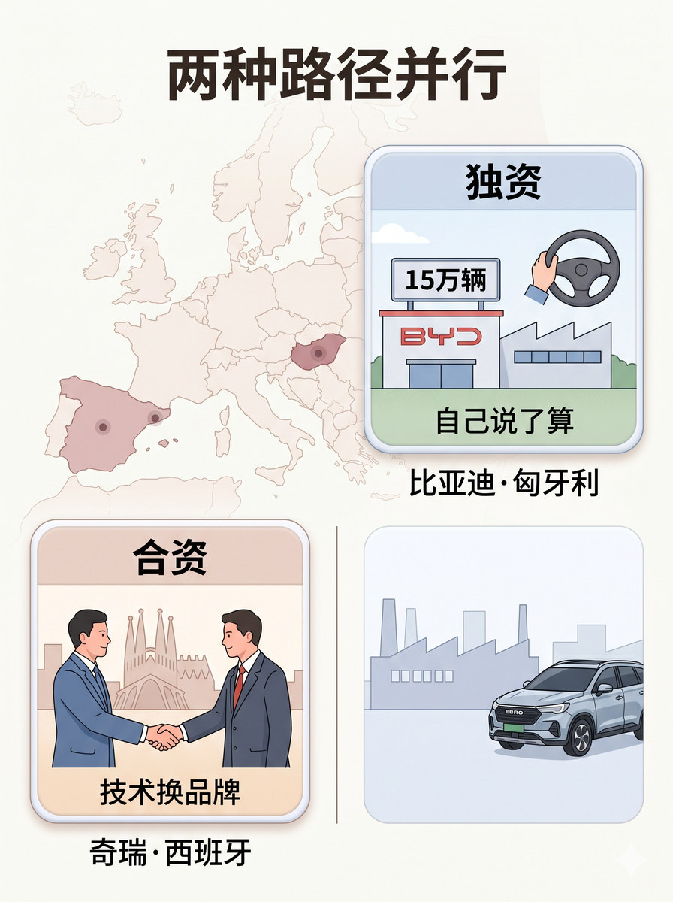
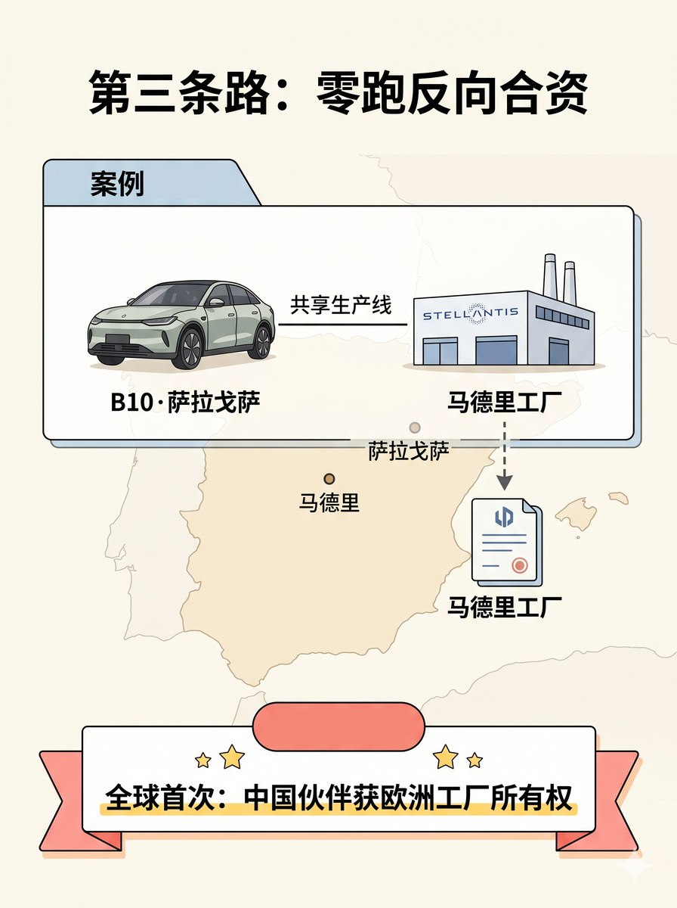
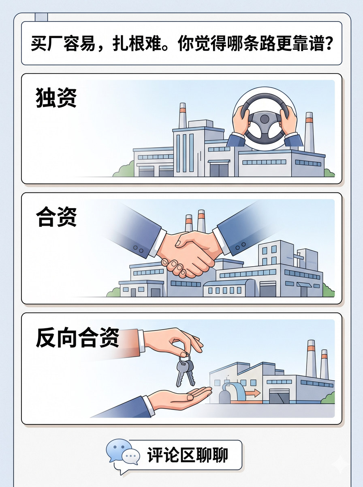

历史 Nano Banana 竖版短视频配图基线：比较出口、合作与本地产能等进入路径和选择逻辑
# D3 分块段04 Prompt 生成一张 3:4 竖版静态配图。 整张图采用顶部标题+左右双栏对比结构。欧洲地图轮廓作为浅色底纹铺满整个中部背景。 顶部放主标题，写"两种路径并行"。 左栏为一个圆角模块卡片，标题写"独资"。卡片内部画一个在匈牙利的比亚迪工厂场景，建筑上方有"15万辆"标牌，旁边放一个独立掌控/自主运营的图标（如单手握方向盘）。卡片下方标注"比亚迪·匈牙利"。 右栏为一个同尺寸圆角模块卡片，标题写"合资"。卡片内部画一个中西双方握手合作的场景（奇瑞和西班牙EV Motors），背景为巴塞罗那工厂建筑轮廓，旁边有一辆EBRO S700车型。卡片下方标注"奇瑞·巴塞罗那"。 两个卡片高度一致、间距均匀，中间用一条细垂直线分隔表示对比关系。欧洲地图底纹上标注匈牙利和西班牙两个国家位置的圆点标记。 图中只允许出现这些文字："两种路径并行"、"独资"、"比亚迪·匈牙利"、"15万辆"、"自己说了算"、"合资"、"奇瑞·巴塞罗那"、"15万辆"、"技术换品牌"。除这些文字外不要新增任何说明性文字。不要水印，不要"AI生成"字样，不要品牌官方logo，不要无意义英文装饰。地图使用欧洲轮廓，不要出现中国地图或全球地图。 整体视觉采用清晰理性的clean editorial illustration，模块边界清楚、轻立体但不过硬，flat illustration，light texture，整体专业干净结构优先。

# D3 分块段05 Prompt 生成一张 3:4 竖版静态配图。 整张图采用顶部标题+中部案例大卡片+底部核心判断区的三段结构。西班牙地图轮廓作为浅色底纹铺满中部背景。 顶部放主标题，写"第三条路：零跑反向合资"。 中部为一个占主体的大案例卡片，内部左边画一辆零跑B10车型，右边画一座Stellantis萨拉戈萨工厂建筑，中间用一条共线生产示意线连接（表示B10在Stellantis工厂生产）。卡片下方再画一条虚线箭头指向"马德里工厂"转让文件图标，表示所有权转移。 底部为一个突出的缎带或徽章形状的核心判断区，使用高亮色，写"全球首次：中国伙伴获欧洲工厂所有权"。徽章上可以加一个小星星或里程碑图标。 西班牙地图底纹上标注两个城市坐标：萨拉戈萨（北部）和马德里（中部），用圆点标记。 图中只允许出现这些文字："第三条路：零跑反向合资"、"B10·萨拉戈萨"、"马德里工厂"、"全球首次：中国伙伴获欧洲工厂所有权"。除这些文字外不要新增任何说明性文字。不要水印，不要"AI生成"字样，不要品牌官方logo，不要无意义英文装饰。地图使用西班牙轮廓，不要出现中国地图或全球地图。 整体视觉采用清晰理性的clean editorial illustration，模块边界清楚、轻立体但不过硬，flat illustration，light texture，整体专业干净结构优先。

# D3 分块段09 Prompt 生成一张 3:4 竖版静态配图。 整张图采用顶部标题+中部三张路径回顾卡片+底部互动区的结构。 顶部放主标题，写"买厂容易，扎根难。你觉得哪条路更靠谱？" 中部为三张等高的横向路径回顾卡片，上下排列，大小一致。 上侧卡片标题写"独资"。卡片内部画一座工厂建筑+一个掌控方向盘图标，代表比亚迪模式。 中间卡片标题写"合资"。卡片内部画两只手握在一起的合作图标+一座合作工厂建筑，代表奇瑞模式。 下侧卡片标题写"反向合资"。卡片内部画一座工厂所有权正在移交/转让的动作画面（如一手交钥匙、一手接），代表零跑模式。 底部互动区为一个或多个评论气泡图形，气泡内写"评论区聊聊"。 全图色调与前面8张图保持一致。 图中只允许出现这些文字："买厂容易，扎根难。你觉得哪条路更靠谱？"、"独资"、"合资"、"反向合资"、"评论区聊聊"。除这些文字外不要新增任何说明性文字。不要水印，不要"AI生成"字样，不要品牌官方logo，不要无意义英文装饰。 整体视觉采用清晰理性的clean editorial illustration，模块边界清楚、轻立体但不过硬，flat illustration，light texture，整体专业干净结构优先。
